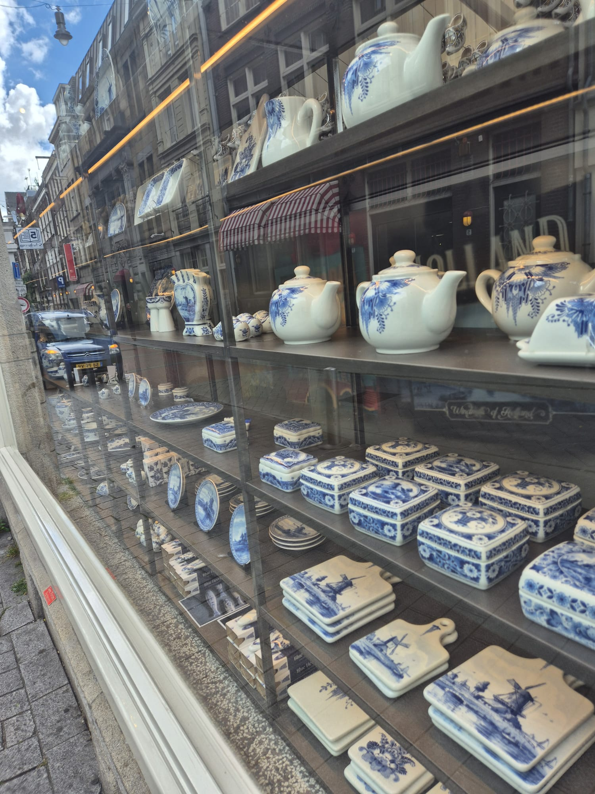
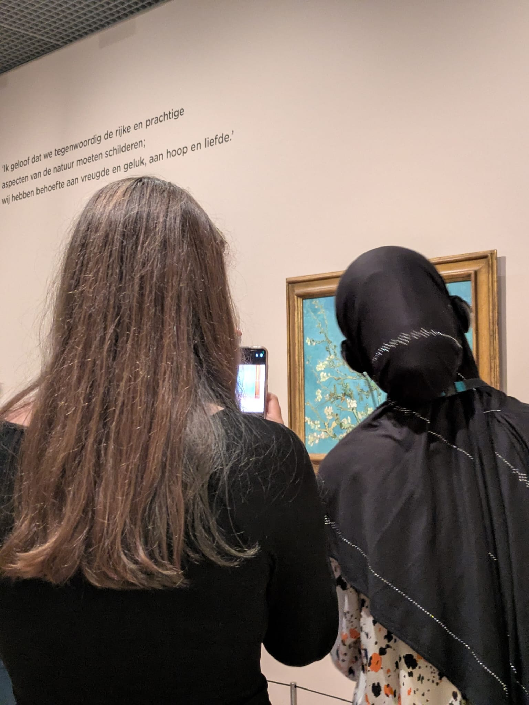

Wanneer ik mijn huidige kijk op kunst vergelijk met het begin van jaar 4, zie ik duidelijk een verandering. Eerst was mijn beeld van kunst vrij beperkt en vooral gericht op traditionele vormen zoals schilderijen en beelden. Nu begrijp ik dat kunst veel breder is en ook in design, architectuur en openbare ruimte voorkomt. Mijn smaak is daardoor ook veranderd, omdat ik nu meer waardering heb voor conceptuele en functionele kunst.
Het meest impactvolle inzicht binnen CKV was voor mij dat kunst niet alleen iets is om naar te kijken, maar ook iets dat je gebruikt of ervaart. Dit heeft mijn manier van denken beïnvloed, omdat ik nu meer let op de betekenis achter objecten in mijn omgeving. Een belangrijk moment was het werken aan mijn PO over toegepaste kunst, omdat ik toen echt moest analyseren hoe kunst en functie samenkomen.
Ik ben tijdens CKV ook uit mijn comfortzone gestapt bij het maken van analyses en het geven van mijn mening over kunstwerken. In het begin vond ik het lastig om kunst te “interpreteren”, maar later werd het makkelijker om verbanden te leggen tussen vorm, functie en betekenis. Dit heeft mij geholpen om kritischer te kijken en beter te onderbouwen wat ik zie.
Deze ervaringen hebben bijgedragen aan mijn culturele vorming doordat ik nu bewuster kijk naar kunst en cultuur in mijn omgeving. Ik begrijp beter hoe kunst invloed heeft op hoe mensen een plek ervaren en hoe het kan bijdragen aan identiteit en sfeer. Voor mijn verdere ontwikkeling betekent dit dat ik opener sta voor verschillende vormen van kunst en dat ik sneller de betekenis achter dingen probeer te begrijpen in plaats van alleen het uiterlijk te beoordelen.